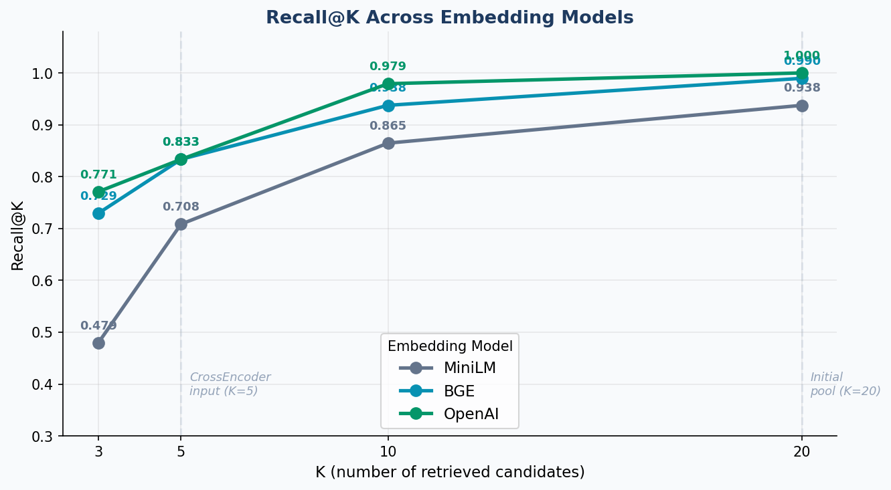
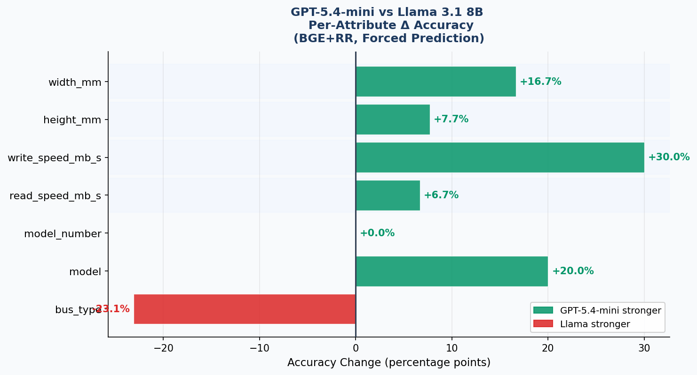

Some missing product attributes, like an exact model number or a read speed, are not in the product description at all, so an LLM can only guess them. They are often in another shop's listing of the same product. Retrieving those listings raised imputation accuracy from 15.6% to 72.9% with everything running locally, and to 77.1% with a cloud model that had to give an answer.
Product catalogues have gaps in structured fields: an SSD's write speed, a GPU's board height in millimetres, a USB drive's model number. When the value is not in the description, better prompts or a bigger model do not help. But another retailer often lists the same product with that field filled in, so this is a retrieval problem.
I followed Scenario 3 of RetClean (Naeem et al., 2024), where everything runs locally and no product data leaves the company.
I built a RAGCleaner component for PyDI, the Python data integration
framework from the University of Mannheim, so it works together with PyDI's entity
matching, schema mapping and DataFusionEngine.
cluster_id, with 96
evaluation tasks across 7 attributes.
UNKNOWN.

The biggest improvement came from reranking, not from a better embedding model or LLM: adding a cross-encoder on top of MiniLM retrieval raised accuracy from 36.5% to 68.8%. Attributes that carry no signal for an LLM, such as height in millimetres, went from 0% to 77% with retrieval.

With the option to answer UNKNOWN, GPT-5.4-mini scored below every Llama configuration (60 to 63% against 69 to 73%). The prompt and its abstention rule had been tuned while I was working with Llama, and GPT-5.4-mini used UNKNOWN far more often. When both models had to give an answer, GPT-5.4-mini reached 76 to 77%, the best results in the study. So the first comparison measured how well the prompt fit each model, not what the models could do.
The best result needs an external API, which goes against the privacy goal of the project. For an on-premise setup I would still recommend BGE-large with reranking and Llama 3.1 8B at 72.9%, about four points lower.
In the best cloud configuration, about 30% of the remaining errors came from ambiguous or
inconsistent ground truth, 22% from confusing two fields (write speed instead of read
speed), 22% from numbers taken from a near-duplicate product, 19% from very similar SKUs,
and 7% from version mismatches. I also tried merging the top 5 retrieved records into one
record with PyDI's DataFusionEngine before extraction. It reduced abstention
but hurt text attributes, and accuracy for the model number dropped by 26 points,
because the merge could not tell a different spelling of a value from an actually
different value.